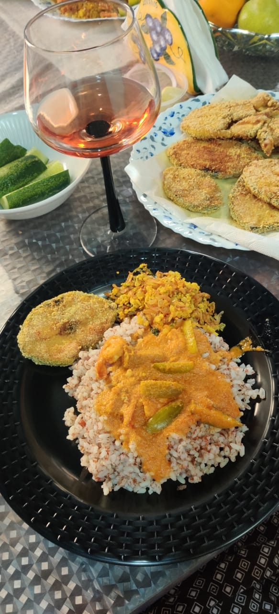

Contains: fish
Ingredients
Quantities for 4.
- 1 cup dried prawns Dried Fishgalmbo; dried Bombay duck is the other classic choice
- 1 cup grated fresh Coconut
- 1 large, very finely chopped Onion
- 4, broken Dried Red Chilli
- 1 tsp Chilli Powder
- 1/4 tsp Turmeric
- 2 tsp thick pulp Tamarindor the juice of half a lemon
- 1, finely chopped Green Chillioptional
- 2 tbsp Coconut Oil
- 2 tbsp, chopped Coriander Leavesoptional
- to taste Salt
Cookware
stovetop, kadhai
Checked against the ingredient list for ten allergens: milk, egg, fish, crustaceans, tree nuts, peanuts, sesame, mustard, soy and gluten. Brands vary, so read the label on anything new to you.
Before you start
- Pick over the dried prawns for grit and shell fragments, then rinse them twice in cold water and squeeze dry. They are salty, so hold back on salt until the end.
- Soak the tamarind in 2 tbsp hot water and press out the pulp.
- Everything is combined off the heat, so have the onion chopped and the coconut grated before you turn on the stove.
Method
- Dry-roast the drained prawns in a kadhai over medium heat 4-5 minutes until they are crisp and rattle in the pan.They must be properly dry and brittle. Any softness left and the kismur goes soggy within the hour.
- Tip them onto a plate to cool, then crush lightly with your fingers into coarse pieces.
- In the same pan warm the coconut oil and fry the broken dried chillies 30 seconds until they darken.
- Add the grated coconut and toast 3-4 minutes, stirring, until it is dry and pale gold at the edges.Only lightly toasted. Kismur wants the fresh sweetness of coconut, not the deep roast of a tonak masala.
- Stir in the chilli powder and turmeric and take the pan off the heat immediately.
- Let the coconut cool to room temperature, then fold in the crushed prawns, chopped onion and green chilli.
- Add the tamarind pulp and toss thoroughly with your hands. Taste, then salt. The prawns may have brought enough.
- Finish with coriander leaves and serve within a couple of hours, while the onion is still crunchy.
Safe temperatures: Fish is done at 63°C / 145°F, or when it turns opaque and flakes easily. Reheat leftovers to 74°C / 165°F. FoodSafety.gov
Storage
Best within 2 hours of mixing. It keeps 2 days refrigerated but the onion softens and weeps; refresh with a little extra raw onion and tamarind before serving.
Nutrition Medium estimate
High protein: 39 g a serving, 47% of the calories
| Per serving136 g | Per 100 g | |
|---|---|---|
| Calories | 331 kcal | 243 kcal |
| Protein | 39.1 g | 29 g |
| Carbohydrate | 8.9 g | 6 g |
| of which sugars | 4.0 g | 3 g |
| Fibre | 3.0 g | 2 g |
| Fat | 15.0 g | 11 g |
| of which saturated | 11.9 g | 9 g |
| of which unsaturated | 1.7 g | 1 g |
Ingredients given to taste count as zero, so the real figures run a little higher. Estimated from raw ingredients using USDA FoodData Central.
More like this: Quick Indian recipes (30 min) · Gluten-free Indian recipes · Dairy-free Indian recipes · Goan recipes
Times, yields, allergens and nutrition are guidance. Use your own judgement on doneness and on storing. More in About.